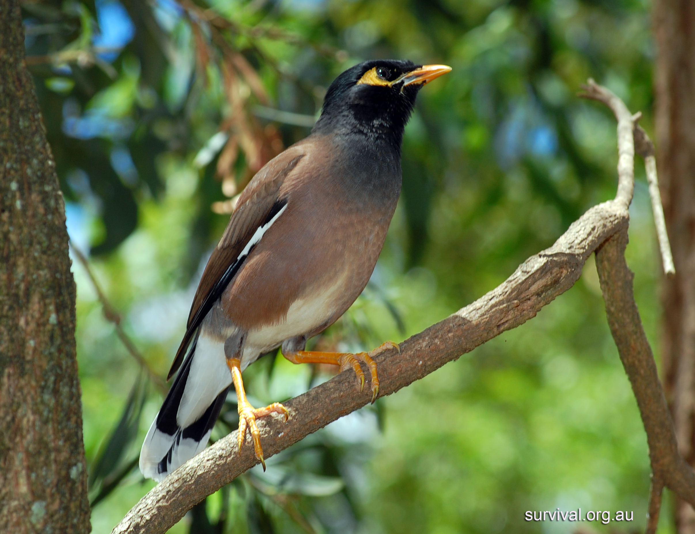

|
Mynah, also spelled myna, any of a number of Asian birds of the family Sturnidae (order Passeriformes) of somewhat crowlike appearance. The hill mynah (Gracula religiosa) of southern Asia, called the grackle in India, is renowned as a “talker.” It is about 25 cm (10 inches) long, glossy black, with white wing patches, yellow wattles, and orangish bill and legs. In the wild it chuckles and shrieks; caged, it learns to imitate human speech far better than its chief rival in mimicry, the gray parrot. The common, or Indian, mynah (Acridotheres tristis) is about 20 cm long, black and brown, with white in the wings and tail, orange skin around the eyes, and heavy dark wattles; it has been introduced into Australia, New Zealand, and Hawaii. The crested mynah (A. cristatellus) is black, with white wing patches and yellow legs and bill. Native to China and Indochina, the crested mynah was introduced into Vancouver Island, British Columbia, in 1900 but has not spread. For pied mynah, see starling. |
 |